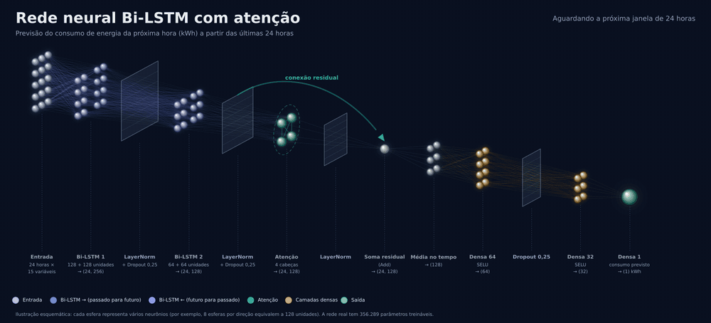

O Quettawatt.ia mede o consumo em tempo real, usa uma rede neural Bi-LSTM para prever as próximas horas e avisa quando algo foge do normal.
Sensores ESP32 enviam kWh, tensão, corrente, potência, temperatura e umidade. Um servidor guarda o histórico, a IA analisa tudo e um painel de BI mostra o que está acontecendo e o que deve acontecer nas próximas horas.
O nome vem de quetta, o maior prefixo do Sistema Internacional (10³⁰): a ideia é enxergar energia em qualquer escala.
Veja o Quettawatt.ia funcionando, do sensor ao painel.
Bi-LSTM é um tipo de rede neural feita para dados que acontecem em sequência, como o consumo de energia ao longo das horas. Ela olha uma janela das últimas 24 horas, aprende o ritmo do consumo e estima o consumo da próxima hora.
Cada esfera da animação representa um grupo de neurônios, e o pulso de luz mostra o caminho da informação: entra a janela de 24 horas, passa pelas camadas e sai um único número, o consumo previsto da próxima hora.

A janela das últimas 24 horas, com 15 sinais em cada hora. É o que a rede enxerga de cada vez.
Com 128 e 64 unidades por direção. A azul lê do passado para o presente e a violeta do presente para o passado. A primeira camada capta padrões curtos, e a segunda combina esses padrões em ritmos maiores, como o do dia.
A normalização mantém os números em uma escala estável. O Dropout desliga 25% dos neurônios ao acaso durante o treino, para a rede aprender o padrão em vez de decorar os exemplos.
Quatro cabeças olham a janela de quatro jeitos e aprendem quais horas pesam mais. Uma conexão residual soma o que entrou com o que saiu, para não perder informação no caminho.
Uma média ao longo das 24 horas condensa a janela inteira em um único conjunto de 128 números.
Três camadas densas, de 64, 32 e 1 neurônio, transformam esse resumo em um número só: o consumo previsto da próxima hora.
No total são cerca de 356 mil parâmetros, os valores que a rede ajusta sozinha durante o treino.
Lê a janela do passado para o presente
Lê a mesma janela do presente para o passado
A rede só usa leituras que já aconteceram. Ler a janela nos dois sentidos serve para entender o contexto de cada momento, não para olhar o futuro. Os destaques em âmbar mostram a atenção passando pelos momentos que mais pesam.
O mesmo valor pode significar coisas diferentes conforme o que vem antes e depois dele na janela. Ler nos dois sentidos ajuda a separar o começo de um pico de uma simples oscilação da rotina.
Essa camada aprende a dar mais peso aos momentos da janela que mais ajudam na previsão, como uma subida brusca ou uma mudança de ritmo.
O Monte Carlo Dropout repete a previsão 50 vezes com pequenas variações na rede. Se os resultados se parecem, a confiança é alta. Se se espalham, o intervalo se abre. Depois, a faixa é ajustada pelos erros reais medidos no teste.
Quinze sinais por hora: consumo, temperatura, umidade, hora, dia da semana e mês (estes três representados de forma cíclica, para que 23h fique perto de 0h), a variação desde a leitura anterior em kWh e em %, a média móvel de 6 horas e se o dia é fim de semana. Dois sinais trazem a rotina semanal: o consumo da mesma hora uma semana antes e a média dessa hora nas 4 semanas anteriores. A qualidade da previsão cresce com o histórico acumulado, e o projeto ainda está em fase de testes.
Uma rede Bi-LSTM estima o consumo da próxima hora. Com Monte Carlo Dropout, ela também mostra o intervalo de incerteza, calibrado com erros reais de um período que a IA nunca viu no treino. O gráfico do topo é uma simulação para mostrar a ideia.
Compara cada leitura com as últimas 48 e com o padrão da mesma hora nos dias anteriores, e classifica o aviso em cinco níveis, do informativo à emergência. Um modelo Isolation Forest dá uma segunda opinião sobre o que foge do normal.
O drift conceitual, medido pelo PSI (índice de estabilidade da população), compara a última semana com a anterior e mostra quando o consumo deixou de se parecer com o histórico. Se a mudança se sustenta, a IA se retreina.
Score de A a F, calculado a partir de eficiência, regularidade, consumo noturno, picos e tendência.
Zera cada sinal, um de cada vez, e vê quanto a previsão muda. Assim mostra quais variáveis mais pesaram, para o resultado não ser uma caixa-preta.
O chat do painel consulta os dados reais e responde sobre consumo atual, previsão, alertas, score e dicas de economia.
Uma previsão só serve se for testada de forma honesta. Por isso o projeto separa os dados por ordem de tempo e mede o erro em um período que a IA nunca viu.
Os últimos 12 meses de leituras são divididos em três blocos seguidos: treino, validação e teste. O teste vem depois no tempo e nunca ensina a IA, como numa previsão de verdade.
A validação acompanha o aprendizado. Quando ela deixa de melhorar por 15 épocas seguidas, o treino termina e a IA volta para a melhor versão. Se o aprendizado trava, a velocidade dele é reduzida.
A cada hora, a previsão é comparada com a leitura real. A IA guarda esses erros e corrige parte de um desvio que se repete na mesma hora do dia, com limite de 25% para não exagerar.
Se a entrada for muito diferente de tudo que ela viu no treino, a previsão é marcada como pouco confiável e a confiança é limitada.
Toda semana, ou quando o padrão de consumo muda de verdade, a IA treina de novo em segundo plano, sem parar a leitura dos sensores. O modelo novo só entra no lugar do antigo quando termina.
Se não houver um modelo válido, a previsão fica indisponível em vez de chutar um número com uma rede sem treino.
Teste com 1.748 horas seguidas, de 02/08 a 14/10/2026 (cerca de 73 dias), em dados que a IA nunca viu no treino. Ela explica 96,5% da variação do consumo. O projeto está em fase de testes, e esses números vão mudar conforme o histórico cresce.
Hoje a IA empata com uma média simples das 4 últimas semanas na mesma hora. Isso mostra que boa parte do consumo é rotina que se repete, e que o próximo ganho deve vir de informação nova, como feriados, eventos e previsão do tempo. O maior erro está entre 18h e 22h, os horários de pico, com cerca de 0,27 kWh.
Ideias em estudo para os próximos passos do projeto. Nada aqui está pronto ainda.
Descobrir o aparelho que pesa na conta e agir antes de a fatura chegar.
Um motor que passa a consumir diferente do normal pode ser o primeiro sinal de defeito.
Prever o consumo ajuda a decidir quando usar, guardar ou gerar energia.
A estrutura de locais e dispositivos já permite acompanhar várias unidades juntas.
Avisos por e-mail ou mensagem, e não só dentro do painel.